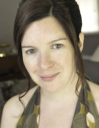
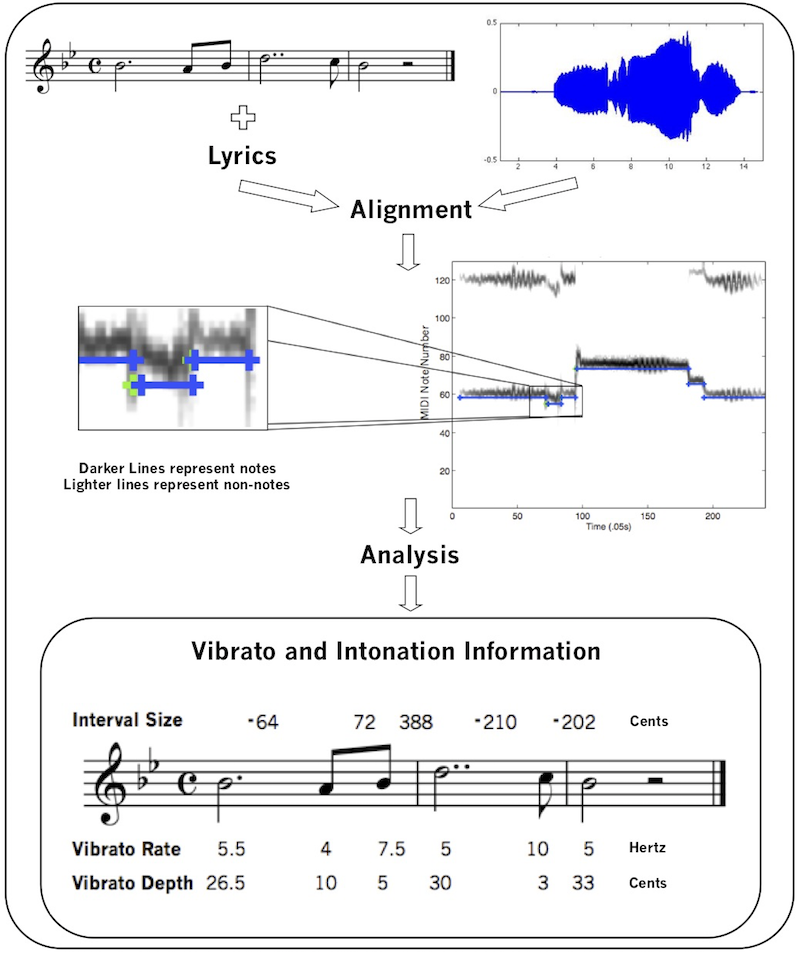

An Interview with Johanna Devaney
Posted by ehopkins on April 12, 2018
Johanna Devaney is Assistant Professor of Music Theory and Cognition at Ohio State University, currently teaching in the music technology program at NYU, and the newest SIMSSA Collaborator. We had a chance to talk over Skype about music and the digital humanities, learning to program, and the ways that music research can drive technological advances even beyond disciplinary bounds.

EH: Thank you so much for agreeing to talk with me today. We’re pretty excited to have you on board as a SIMSSA collaborator. Since music information retrieval as I’ve experienced it attracts folks with a lot of different disciplinary interests, I’m always curious about the paths people have taken to end up here. I looked at your CV and it looks like you started out playing piano and oboe and doing some composing, and then you did a BFA in music and history, and then a computer programming diploma, all before ever getting into Music Information Retrieval specifically. Can you tell me a little bit more about that early education and how you got into computer programming?
JD: I’d always been interested in using computers. I’m old enough that when I got my first computer the way that you got new games was either coding them or downloading them from bulletin board systems. I’d always found computers really interesting but I didn’t actually pursue that through my undergraduate. When I graduated with my BFA, I wanted to learn more about programming, so I decided to do the computer programming diploma. A year into the diploma, I started a Master’s at York in Composition, and worked on both simultaneously for a year. Initially, I was focused on applying programming in my compositions. This expanded to research due to interest in in my composing for vocalists and unfretted string instruments capable of flexible intonation. I wanted my performance instructions to extend what they were doing, as opposed to just prescribe something completely different. During the course of my Master’s, I realized that there was very little written about this, so I thought, well, this would be an interesting subject for a PhD. This ultimately led me to Ich’s lab at McGill.
EH: How did your time at McGill influence work you’ve done since then, going on in MIR?
JD: The great thing about the Schulich School of Music at McGill is opportunity to engage with both the technical and the musicological. In addition to working with Ich, I worked closely with Jon Wild and Peter Schubert on all of the singing voice work that I was doing. Also CIRMMT provided many other opportunities to intersect with people doing thing. This was really valuable not only for learning how to do interdisciplinary research, but also learning how to talk to people from different disciplines.
EH: A lot of what we do at SIMSSA involves symbolic representations of digitized scores, and I know a lot of what you do involves symbolic representations of performance. Could you talk a little bit about making computational models of performance — what is your interest in that, and what sorts of problems do you see that applying to?
JD: In terms of western art music scholarship, there’s a bias towards notated music. But in terms of what people experience, its the performance. Many of questions that we may be asking of the notated music, such as musical structure, can being linked to the listener experience. Thus, it’s useful to be able to examine performances and to see whether the things we find through symbolic analysis are being emphasized by the performer or not. You can have some theories by looking at the score, you can augment those by seeing how people perform it, and you can put those two together in terms of building your reading of the piece.
EH: I know you’re usually at Ohio State and you mentioned you’re at New York University this year. What projects have you been working on and what sorts of things are going on at NYU?
JD: So I usually am in a music theory and cognition program, but I’ve been teaching in the music technology program here this year. I’ve been intersecting with both people doing music cognition — mainly a lot of stuff on emotion and film music actually, I’ve been advising students on that — and people doing music information retrieval. I’ve been continuing some of the work I’ve been doing with my TAVERN dataset a bit, as well as issues around encoding performance data.
EH: TAVERN is how I think I first heard about you, but can you give a brief idea of how that project started?
JD: Yeah, so, it originally came about because I managed to convince Google that this was an interesting thing to fund through their Google Faculty Research Award program.
EH: Well done!
JD: Yeah! The grand vision is to develop a model of symbolic music analysis where you’d be parsing the structurally significant notes from the entire musical surface. The first step in developing this develop was to to get some labelled data. I thought that theme and variations form was a really useful way to do this, because, when there’s consistency in terms of the harmony, you can see how the same harmony is being realized with different textures in a way that is totally ecologically valid. So because I was at OSU in music theory, what I actually had available in my graduate students (aka Nat and Claire!) was expertise in doing music analysis, so I used money in order to do the data set creation, which was really a huge undertaking. The next thing is to think about doing an audio version of it.
EH: I wanted to ask you a little about AMPACT since you did that workshop at the Digital Humanities Week in New York recently. Tell me a little bit about the development of AMPACT and the workshop and future plans for it.
JD: AMPACT uses scored-guided techniques to extract timing, tuning, dynamics and tempo from recordings of musical performances. AMPACT really came out of my dissertation — it was the tools that I was using to do the analysis of the vocal performances. The name came out of a solid hour-long meeting with Ich, going through all the possible acronyms. I got funding from the NEH Digital Humanities program and that allowed me to do some additional development, specifically to develop the technology to not just do monophonic performances but polyphonic performances as well. The music performance encoding project also fell under that so that’s how I got funding for that too.
EH: What sorts of people are coming to your workshop to learn about AMPACT?
JD: Since it was the digital humanities event, it was less music scholars and more people who are interested in ethnography of music, but not ethnomusicologists by trade. As well people who are interested in looking at cultural products other than text.
Shown below is a schematic representing the AMPACT process. See here for more.

EH: The Frontiers in Digital Humanities journal— you’re currently the Specialty Chief Editor for the Digital Musicology section. Can you tell me a little bit more about that publication, what sorts of work you do and what its goals are?
JD: What I’m most interested in is having a space where it’s not just people using tools that have been developed to do — to answer musicological questions — but rather see the way that musicological questions can actually push the development of tools. And not just MIR tools but actually core algorithm development in fields like machine learning or signal processing.
EH: What have you worked on with machine learning?
JD: I’ve mostly been using classic machine learning approaches as opposed to deep learning techniques, just because the data that I have to work with is relatively small. I’ve worked on classification with support vector machines and music alignment using temporal models like hidden Markov models, and then currently doing some stuff with conditional random fields for the symbolic music analysis from TAVERN.
EH: In terms of learning the technical side of this, how much of your programming knowledge came from your computer programming diploma versus how much have you learned on the job? A lot of musicologists I see learning to code on the job because of getting interested in MIR.
JD: In terms of my actual coding I really learned how to code, like actually properly code, when working on my diploma, and what I’ve been learning since has been stuff like the machine learning and signal processing. I feel like it would be really difficult for me to have gotten a handle on programming paradigms like object-oriented programming on the fly.
EH: Thanks a lot for talking to me today! I appreciate it, I’m glad we have you on board.
Learn more about Johanna at www.devaney.ca or follow her on Twitter @jcdevaney.